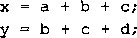
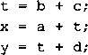

编译器可能试图产生下列代码来省去一个浮点加法：
然而，对于x来说，这个计算可能会产生与原始值不同的值，因为它使用了加法运算的不同的 结合方式。在大多数应用中，这种差异小得无关紧要。不幸的是，编译器无法知道在效率和忠实 于原始程序的确切行为之间，使用者愿意做出什么样的选择。结果是，编译器倾向于保守，避免 任何对功能产生影响的优化,即使是很轻微的影响。
另一方面，浮点加法满足了单调性属性：如果a 那么对于任何a、6以及x的值，除
了 NaN， 都有;c + + &无符号或补码加法不具有这个实数（和整数）加法的属性。
浮点乘法也遵循通常乘法所具有的许多属性。我们定义x* f ：y为及n/m/OcXy)。这个运算在 乘法中是封闭的（虽然可能产生无穷大或M),它是可交换的，并且它的乘法单位元为1.0。 另一方面，由于可能发生溢出，或者由于舍入而失去精度，它不具有可结合性。例如，在单 精度浮点情况下，表达式（le20*le20)*le-20的值为+ oo,而l e 20* (le20*le_20)将 得出le20。另外，浮点乘法在加法上不具备分配性。例如，在单精度浮点情况下，表达式 Ie20*(le20—le20> 的值为 0.0,而 Ie20*le20-Ie20*le20 会得出 AWV。
另一方面，对于任何〜6和c，并且1 6和c都不等于Mi见浮点乘法满足下列单调性：
且 c<0 => a* { c < b * f c 此外，我们还可以保证， 只要a关NaN， 就有像我们先前所看到的，无符号或 补码的乘法没有这些单调性属性。
对于科学计算程序员和编译器编写者来说，缺乏结合性和分配性是很严重的问题。即使为 了在三维空间中确定两条线是否交叉而写代码这样看上去很简单的任务，也可能成为一个很大 的挑战。
C语言中的浮点数
所有的C语言版本提供了两种不同的浮点数据类型：float和double。在支持IEEE浮点 格式的机器上，这些数据类型就对应于单精度和双精度浮点。另外，这类机器使用向偶数舍入的 方式。不幸的是，因为C语言标准不要求机器便用IEEE浮点，所以没有标准的方法籴改变舍入 方式或者得到诸如一0、+ 00 、 — 〒或者TViafiV之类的特殊值。大多数系统提供include ( ‘ .h') 文件和读取这些特征的过程库，但是细节因为系统不同而不同。例如,•当程序文件中出现下列句 子时，GNU编译器GCC会定义程序常数 INFINITY (表示+ ~)和 NAN (表示AWV0。
define _GNU_SOURCE 1 *
include <math.h>
较新版本的c语言，包括ISO C99,包含第三种浮点数据类型long double。对于许多机 器和编译器来说，这种数据类型等价于double数据类型。不过对于Intel兼容机来说，GCC用 80位“扩展精度”格式来实现这种数据类型，提供了比标准64位格式大得多的取值范围和精 度。家庭作业2.85研究了这种格式的属性。
_练习题 2.53完成下列宏定义，生成双精度值 + «=、 一~和0。
#define POS INFINITY
#define NEG 一工 NFINITY
#define NEG—ZERO
不能使用任何include文件（例如math.h),但你能利用的是：双精度能够表示的最大的有限数，
大约是 1.8X10 3 。 8 。
当在int、float和double格式之间进行强制类型转换时，程序改变数值和位模式的原 则如下（假设int是32位的）：
•从int转换成float,数字不会溢出，但是可能被舍入。
•从int或float转换成double,因为double有更大的范围（也就是可表示值的范围）， 也有更高的精度（也就是有效位数)，所以能够保留精确的数值。
•从double转换成float,因为范围要小一些，所以值可能溢出成为+ oo或-另外， 由于精确度较小，它还可能被舍入。
•从float或者double转换成int,值将会向零舍入。例如，1.999将被转换成1， 而-1.999将被转换成-1。进一步来说，值可能会溢出。C语言标准没有对这种情况指 定固定的结果。与Intel兼容的微处理器指定位模式[10...00](字长为w时的为 整数不确定（integer indefinite)值。一个从浮点数到整数的转换，如果不能为该浮点数 找到一个合理的整数近似值，就会产生这样一个值。因此，表达式（int>+lel0会得 到-21483648,即从一个正值变成了一^个负值。
网络旁注DATA ： IA32-FP ： Intel IA32的浮点运算
在下一章，我们将深入研究Intel IA32处理器,这种处理器大量地应用于今天的个人计算机 中。这里，我们重点突出这种机器的一个特性，即用GCC编译的时候，它能够严重影响程序对 浮点数运算的行为。
.像大多数其他处理器一样，IA32处理器有特别的存储器元素，称为寄存器，当计算或者使 用浮点数时，用来保存浮点值。IA32非同一般的属性是，浮点寄存器使用一种特殊的80位的扩 展精度格式。与存、储器中保存傢所使用的普通 32 位单精度和 64 位双精度格式相比专提供了更 大岣表示范围和更高的精度。（参见家庭作业 2 . 85 。)所有”早精度和双精度数在从存4器加载到 浮点寄存器中时，都会转换成这种格式。运算总是以扩展4度格式进行的。当数字存储在存储器 中时，它们就从扩展精度转换成单精度或者双精度格式。
对于程序员而言，把所有寄存器数据扩辱成so位，并把所有存储器数据收缩成更小的格式 的做法，命产生一些不太好的结果 b 这意味着从寄存器存储一个值到存储器中，然后再把它取回 到寄存器中,由于會今、下溢或者上溢,可能会改变它的值。对于C语言释序员来说，这种存 入和取出并不总是可见的 ， 因而会导致一些非常异常的结果。
..较新版本的Intel处理器,包括IA32和较新的64侔机器，对单精度和双精度浮点运算提 供了直接的崎件支持。随着,硬件以及基于较新的浮点指令产生代码的新编译器的使用，以前 IA32做法导致的这些奇怪特性会逐渐消失。
Ariane 5——浮点溢出的高昂代价
将大的浮点数转换成整数是一种常见的程序锖误来源。I" 6 年6月4日，Ariane 5火箭初次 航行，一个错误便产生了.究难性的后果。 发射后仅仅37秒, 火箭偏离了它的飞行路径，解体并 且爆炸。火箭上载有价俅5亿美元的通信卫星。
后来的调查[69, 39]显示，控制惯性导航系统的计算机向控制引擎喷嘴的计算机发送了一 个无效数据。它没有发送飞行控制信息,而是送出了一个诊新位模式，表明将一个64位浮点数 转换成16位有符号整数时，产生了溢出。
溢出的值测量的是火箭的水平速率，这比早先的Ariane 4火箭所能达到的速度高出了 5倍。 设计Ariane4火箭软件的时候，他们小心地分析了这些数字值，并且确定水平速率决不会超出一 个16位数的表示范围。不幸的是，他们在Ariane 5火箭的系统中简单地重用了这一部分，而没 有检查它所基于的假设。
练习题2.54假定变量x、f和d的类型分别是int、float和double。除了 f和d都不能等于 + 一~或者M之外，'它们的值是任意的。下面每个C表达式，证明它总是为真（也鹌是求值为
1),或者给出一个使表达式不为真的值（也就是求值为0)。
x==(int) (double)x
x== (int) (float) x
d== (double) (float) d
f== (float) (double) f
f==-(-f)
1.0/2==1/2.0
d*d>=0.0
(f+d)-f==d
2.5 小结
计算机将信息按位编码，通常组织成字节序列。用不同的编码方式表示整数、实数和学符 串。不同的计算机模型在编码数字和多字节数据中的字节排序时使用不同的约定。
C语言的设计可以包容多种不同字长和数字编码的实现。虽然高端机器逐渐开始使用64位 字长，但是目前大多数机器仍使用32位字长。大多数机器对整数使用补码编码，而对浮点数使 用IEEE浮点编码。在位级上理解这些编码，并且理解算术运算的数学特性，对于想使编写的程 序能在全部数值范围上正确运算的程序员来说，是很重要的。
在相同长度的无符号和有符号整数之间进行强制类型转换时，大多数C语言实现遵循的原 则是底层的位模式不变。在补码机器上，对于一个w位的值，这种行为是由函数72[^和^/22；
来描述的。Ci吾言隐式的强制类型转换会出现许多程序员无法预计的结果，常常导致程序错误。
由于编码的长度有限，与传统整数和实数运算相比，计算机运算具有完全不同的属性。当超 出表示范围时，有限长度能够引起数值溢出。当浮点数非常接近于0.0，从而转换成零时，也会 下溢。 ,…
和大多数其他程序语言一样，C语言实现的有限整数运算和真实的整数运算相比，有一些特 殊的属性。例如，由于溢出，表达式X*x能够得出负数。但是，无符号数和补码的运算都满足 整数运算的许多其他属性，包括结合律、交换律和分配律。这就允许编译器做很多的优化。例 如，用（x«3)-x取代表达式7*x时，我们就利用了结合律、交换律和分配律的属性，还利用 了移位和乘以2的幂之间的关系。
我们已经看到了几种使用位级运算和算术运算组合的聪明方法。例如，使用补码运算， 〜 X+ 1等价于-X。另外一个例子，假设我们想要一个形如[0，…，0，1，…，1]的位模式，由w- 灸个0后面紧跟着A:个1组成。这些位模式有助于掩码运算。这种模式能够通过C表达式 (l«k)-l生成，利用的是这样一个属性，即我们想要的位模式的数值为例如，表达式 (1«8)-1将产生位模式OxFF。
浮点表示通过将数字编码为的形式来近似地表示实数。最常见的浮点表示方式是由 IEEE标准754定义的。它提供了几种不同的精度，最常见的是单精度（32位）和双精度（64 位）。IEEE浮点也能够表示特殊值+00、—co和
必须非常小心地使用浮点运算，因为浮点运算只有有限的范围和精度，而且不遵守普遍的算 术属性，比如结合性。
参考文献说明
关于C语言的参考书[4幻58]讨论了不同的数据类型和运算的属性。（这两本书中,只有 Steele和Harbison的书[48]涵盖了 ISO C99的新特性。）对于精确的字长或者数字编码C语言 标准没有详细的定义。这些细节是故意省去的，这样可以在更大范围的不同机器上实现C语言。 已经有几本书[59, 70]给了 C语言程序员一些建议，警告他们关于溢出、隐式强制类型转换到 无符号数，以及其祂一些已经在这一章中谈及的陷阱。这些书还提供了对变量命名、编码风格和 代码测试的有益建议。S6acord的书[94]是关于C和C++程序中的安全问题的,本书结合了 C 程序的有关信息，如何编译和执行程序，以及漏洞是如何造成的。关于Java的书（我们推荐 Java语言的创始人James Gosling参与编写的一本书[4])描述了 Java支持的数据格式和算术 运算。
关于逻辑设计的书[56, 115]都有关于编码和算术运算的章节，描述了实现算术电路的不同方 式。Overtoil的关于EEEE浮点数的书[78],从数字应用程序员的角度，详细描述了格式和属性。
家庭作业
. . . : ' . ,■ ■ * ;■ *2.55 i在你能够访问的不同机器上,使用show—bytes (文件show-bytes • c)轔译并运行示例代码。
确定这些机器使用的f节顺序。
*2.56试着用不同的示例值来运行showjDytes的代码。
*2.57 编写程序 show_short、show_long 和 show_double,它们分别打印类型为 sport int、 long int'和doubl白的C语言对象的字节表示。请试着在几种机器上运行。 . ‘
**2.58编写过程is 一 little 一 endian,当在小端法机器上编译和运行时返回1,在大端法机器上编译运行 盼则返回0。这个程序应该可以运行在任何机器上，无论机器的学长是多少。
**2.59编写一个C表达式 ， 使它生成一个字，由x的最低有效字节和y中剩下的字节组成。对于运算数
x=0x89ABCDEF 和 y=0x76543210, 就得到 0x765432EF o **2.60假设我们将一个w位的字中的字节从0(最低位）到w/8 — 1(最高位）编号。写出下面C函数的代码， 它会返回一个无符号值，其中参数x的字节i被替换成字节b:
unsigned put_byte (unsigned x, unsigned char b int i);
以下的一些示例，说明了这个函数该如何工作：
replace_byte(0x12345678 , OxAB, 2) --> 0xl2AB5678 replace^byte(0x12345678 , OxAB, 0) —> 0xl23456AB
位级整数编码规则
在接下来的作业中，我们特意限制了你能使用的编程结构，来帮你更好地理解C语言的位级、逻辑 和算术运算。在回答这些问题时，你的代码必须遵守下面这些规则：
•假设
■整数用补码形式表示。
■有符号数的右移是算术右移。
■数据类型int是w位长的。对于某些题目，会给定w的值，但是在其他情况下，只要w是8的 整数倍，你的代码就应该能工作。你可以用表达式sizeof (int) <<3来计算w。
•禁止使用
■条件语句（if或者？：）、循环、分支语句、函数调用和宏调用。
■除法、模运算和乘法。
■相对比较运算符（<、>、<=和>=)。
■强制类型转换，无论是显式的还是隐式的。
•允许的运算 ■所有的位级和逻辑运算 ,。
■左移和右移，但是位移的数量只能在0和w_l之间。
■加法和减法。
■相等（=)和不相等（!=)测试。(在有些题目中，也不允许这些运算。）
■整型常数 INT_MIN 和 INT_MAX。
即使有这些条件的限制，你仍然可以选择描述性的变量名，并且使用注释来描述你的解决方案的逻 辑，尽量提高代码的可读性。例如，下面这段代码从整数参数x中抽取出最高有效字节：
/* Get most significant byte from x */
int get_msb(int x) {
/* Shift by w-8 */
int shift_val = (sizeof (int)-1)«3;
/* Arithmetic ： shift */■ .
• . ■ ' , . . . • int xright = x » shift_val;
/* Zero all but LSB */
return xright & OxFF;
>
**2.61写一个C表达式 ， 在下列描述的条件下产生1,而在其他情况下得到0。假设x是int类型。
x的任何位都等于1。
x的任何位都等于0。
x的最高有效字节中的位都等于1。
x的最低有效字节中的位都等于0。
代码应该遵循位级整数编码规则，另外还有一个限制，你不能使用相拳(=^)和不相等（!=)测试。
2.62编写一个函数int_shi£ts_are_logical (),在对int类型的数使用算术右移的机器上运行时， 这个函数生成1,而其他情况下生成0。你的代码应该可以运行在任何字长的机器上。在几种机器上
测试你的代码。
2.63
将下面的C函数代码补充完整。函数srl用算术右移（由值xsra给出）来完成逻辑右移，后面的 其他操作不包括右移或者除法。函数sra用逻辑右移（由值xsrl给出）来完成算术右移，后面的 其他操作不包括右移或者除法。可以通过计算8*sizeof (int)来确定数据类型int中的位数w。 位移量k的取值范围为0〜w _ 1。
int sra(int x, int k) {
/* Perform shift logically */ int xsrl = (unsigned) x » k;
>
unsigned srl (unsigned x, int k)-[
/* Perform shift arithmetically 氺 / unsigned xsra = (int) x » k;
*2.64
«2.65
写出代码实现如下函数：
/* Return 1 when any even bit of x equals 1; 0 otherwise.
Assume w=32 */ int any_even_one(unsigned x);
函数应该遵循位级整数编码规则，不过你可以假设数据类型int有w = 32位。
写出代码实现如下函数：
/* Return 1 when x contains an even number of Is; 0 otherwise.
Assume w=32 */ int even_ones(unsigned x);
函数应该遵循位级整数编码规则，不过你可以假设数据类型int有w = 32位。
你的代码最多只能包含12个算术运算、位运算和逻辑运算。
*** 2.66
写出代码实现如下函数：
/*
氺 Generate mask indicating' leftmost 1 in x. Assume w=32.
For example OxFFOO -> 0x8000, and 0x6600 --> 0x4000.
If x = 0, then return 0.
*/
int leftmost^one(unsigned x);
函数应该遵循位级整数编码规则，不过你可以假设数据类型int有w = 32位。
你的代码最多只能包含15个算术运算、位运算和逻辑运算。
提示：先将x转换成形如[0...011…1]的位向量。
**2.67
给你一个任务，编写一个过程int_size一is_32 (),当在一个int是32位的机器上运行时，该程 序产生1,而其他情况则产生0。不允许使用sizeof运算符。下面是开始时的尝试：
/* The following code does not run properly on some machines */
int bad - int_size_is_32() {
/* Set most significant bit (msb) of 32-bit machine */
int set_msb = 1 « 31;
/* Shift past msb of 32~bit word */
int beyond_msb = 1 « 32;
'
/* set_rasb is nonzero when word size >= 32
beyond^msb is zero when word size <= 32 */ ■' >
return set_msb && !beyond_msb;
>
当在SUN SPARC这样的32位机器上编译并运行时，这个过程返回的却是0。下面的编译器信息给 了我们一个问题的指示：
warning: left shift count >= width of type
A. 我们的代码在哪个方面没有遵守 C 语言标准？
B•修改代码，使得它在int至少为32位的任何机器上都能正确地运行。 •
C.修改代码，使得它在int至少为16位的任何机器上都能正确地运行。
**2.68写出具有如下原型的函数的代码：
/ *
Clear all but least signficant n bits of x
Examples: x = 0x78ABCDEF, n = 8 —> OxEF, n = 16—> OxCDEF
Assume 1 <= : n <: w
*/ - ^ :. int lower_bits(int x, int n);
函数应该遵循位级整数编码规则。要注意n = w的情况。
2.69写出具有如下原型的函数的代码：
Do rotating right shift. Assume 0 <= ri < w
Examples when x = 0x12345678 and w = 32:
n-4 -> 0x81234567, n-20 > 0x45678123 '
*/ ^ ；
unsigned rotate_right(unsigned x, int n);
函数应该遵循位级整数编码规则。要注意n = 0的情况。
**2.70写出具有如下原型的函数的代码：
/*
Return 1 when x can be represented as an n~bit, 2 1 s complement 本 number; 0 otherwise
Assume 1 <™ n <~ w */
int fits_bits(int x, int n);
函数应该遵循位级整数编码规则。
*2.71你刚刚开始在一家公司工作，他们要实现一组过程来操作一个数据结构，要将4个有符号字节封装 成一个3 2 位unsigned。一个字中的字节从0 (最低有效字节）编号到3 (最高有效字节）。分配给 你的任务是：为一个使用补码运算和算术右移的机器编写一个具有如下原型的函数：
/* Declaration of data type where 4 bytes are packed into an unsigned */ typedef unsigned packed一t;
/* Extract byte from word. Return as signed integer */ int xbyte(packed一t word, int bytenum);
' . .. ■ . _ -
也就是说，函数会抽取出指定的序节，再把它符号扩展为一个3 2 位int。 .
你的前任（.因为水平不够高而被解雇了）编写了下面的.代码：
/* Failed attempt at xbyte */
int xbyte(packed.t word, int bytenum)
return (word » (bytenum « 3)) & OxFF;
>
这段代码错在哪里？
给出函数的正确实现，只能使用左右移位和一个减法。
**2.72给你一个任务，写一个函数，将整数val复制到缓冲区buf中，但是只有当缓冲区中有足够可用的 空间时，才执行复制。
你写的代码如下：
/氺 Copy integer into buffer if space is available */
/* WARNING: The following code is buggy */ void copy _ int(int val, void *buf, int maxbytes) { if (maxbytes-sizeof(val) >= 0)
memcpy(buf , (void *) &val, sizeof(val));
>
这段代码使用了库函数memcpy。虽然在这里用这个函数有点刻意，因为我们只是想复制一个int, 但是它说明了一种复制较大数据结构的常见方法。
你仔细地测试了这段代码后发现，哪怕maxbytes很小的时候，它也能把值复制到缓冲区中。
解释为什么代码中的条件测试总是成功。提示：sizeof运算符返回类型为size—t的值。
你该如何重写这个条件测试，使之工作正确。
**2.73写出具有如下原型的函数的代码：
/* Addition that saturates to TMin or TMax */ int saturating_add(int x, int y);
同正常的补码加法溢出的方式不同，当正溢出时，saturating_add返回7Mzx,负溢出时，返回 TMin 。 这种运算常常用在执行数字信号处理的程序中。
你的函数应该遵循位级整数编码规则 。
**2.74写出具有如下原型的函数的代码：
/* Determine whether subtracting arguments will cause overflow */ int tsub_ovf(int x, int y);
如果计算x - y导致溢出，这个函数就返回1。
%* 2.75假设我们想要计算;的完整的2w位表示，其中，x和7都是无符号数，并且运行在数据类型 unsigned是W位的机器上。乘积的低w位能够用表达式x*y计算，所以，我们只需要一个具有下 列原型的函数：
int signed 一high一 prod(int x, int y);
这个函数计算无符号变量x •少的高w位。
我们使用一个具有下面原型的库函数：
unsigned unsigned一high一prod(unsigned x, unsigned y);
它计算在jc和3；采用补码形式的情况下，的高w位。编写代码调用这个过程，以实现用无符号 数为参数的函数。验证你的解答的正确性。
提示：看看等式（2-18)的推导中，有符号乘积x•少和无符号乘积y.y之间的关系。
**2.76假设我们有一个任务：生成一段代码，将整数变量x乘以不同的常数因子尤。为了提高效率，我们 想只使用+、-和《运算。对于下列ii：的值，写出执行乘法运算的C表达式，每个表达式中最多使
用3个运算。
K=5 ••
K=9 ：
K=30 ：
[=-56:
**2.77写出具有如下原型的函数的代码：
/* Divide by power of two . Assume 0 <= k < w~l */ int divide_power2(int x, int k);
该函数要用正确的舍入方式计算x/2 a ,并且应该遵循位级整数编码规则。
**2.78写出函数mul5div8的代码 ， 对于整数参数x,计算5*x/8,但是要遵循位级整数编码规则。你的 代码计算5*x也会产生溢出。
**2.79写出函数fiveeighths的代码 ， 对于整数参数x,计算5/8x的值，向零舍入。它不会溢出。函数 应该遵循位级整数编码规则。
**2.80编写C表达式产生如下位模式，其中乂表示符号a重复/7次。假设一个w位的数据类型。你的代码 可以包含对参数/«和》的引用 ， 它们分别表示所和《的值，但是不能使用表示w的参数。
A. n
0一1”0 '
*2.81我们在一个int类型值为32位的机器上运行程序。这些 值以补 码形式表示，而且它们都是算术右 移的。unsigned类型的值也是32位的。
我们产生随机数x和y,并且把它们转换成无符号数 ， 显示如下：
/* Create some arbitrary values */ int x = random(); int y = random();
/氺 Convert to unsigned */ unsigned ux = (unsigned) x; unsigned uy = (unsigned) y;
对于下列每个C表达式 ， 你要指出表达式是否总是为1。如果它总是为1,那么请描述其中的数学 原理。否则，列举一个使它为0的参数示例。
(x>y) == (-x<-y)
((x+y)«5) + x-y == 31*y+33*x
~x+^y == ~ (x+y)
(int) (nx-uy) == - (y-x)
((x » 1) « 1) <= x
**2.82 —些数字的二进制表示是由形如…的无穷串组成的，其中少是一个M立的序列。例如，* 的二进制表示是0.01010101…(灭=01),而i的二进制表示是0.001100110011…(少= 0011)。
设7=B2%0；),也就是说，这个数具％二进制表示少。给出一个由r和A组成的公式表示这个无 穷串的值。提示：请考虑将二进制小数点右移A位的结果。
对于下列 的值，串的数值是多少？
001
1001 (c) 000111
*2.83 填写下列程序的返回值,这个程序是测试它的笫一个参数是否大于或者等于第二个参数。假定函数
f2u返回一个无符号32位数字，其位表示与它的浮点参数相同。你可以假设两个参数都不是iVa#。 两种0, +0和-0被认为是相等的。
int float_ge(float x, float y) { unsigned ux = f2u(x); unsigned uy = f2u(y);
卜 Get the sign bits 本 / unsigned sx = ux » 31; unsigned sy = uy » 31;
Give an expression using only ux, uy, sx, and sy */ return ;
>
*2.84给定一个浮点格式，有M立指数和《位小数，对于下列数，写出阶码五、尾数M、小数/和值P的 公式。另外，请描述其位表示。
数 5.0。
能够被准确描述的最大奇整数。 ；
最小的规格化数的倒数。
*2.85与Intel兼容的处理器也支持“扩展精度”浮点形式，这种格式具有80位字长，被分成1个符号位、 灸=15个阶码位、1个单独的整数位和《 = 63个小数位。整数位是IEEE浮点表示中隐含位的显式副 本。也就是说，对于规格化的值它等于1，对于非规格化的,值它等于0。填写下表，给出用这种格式 表示的一些“有趣的”数字的近似值。
描述 |
扩展精度 |
|
值 |
十进制 |
|
最小的正非规格化数 |
||
最小的正规格化数 |
||
最大的规格化数 |
||
*2.86考虑一个基于IEEE浮点格式的16位浮点表示，它具有1个符号位、7个阶码位a = 7)和8个小 数位（《 = 8)。阶码偏置量是2 7 — 1 —1 =63。
对于每个给定的数，填写下表，其中，每一列具有如下指示说明：
Hex：描述编码形式的4个十六进制数字。
M：尾数的值。这应该是一个形如x或f的数，其中X是一个整数，而少是2的整数幂。例如：0、g和士。 五：阶码的整数值。
厂：所表示的数字值。使用或者xX 2 Z 表示，其中jc和z都是整数。
举一个例子，为了表示数^我们有*s = 0, M=|和五=1。因此这个数的阶码字段为0x40 (十进制 值63+1=64)，尾数字段为0xC0 (二进制11000000 2 ),得到一个十六进制的表示40C0。
标记为“一”的条目不用填写。 . .
描述 |
Hex |
M |
E |
V |
-0 |
— |
|||
最小的值>1 |
||||
256 |
—■ |
|||
最大的非规格化数 |
||||
一 OO |
— |
— |
— |
|
十六进制表示为 3AA0 的数 |
— |
**2.87考虑下面两个基于IEEE浮点格式的9位浮点表示。
格式 A
■ 有一个符号位。
■ 有 &=5 个阶码位。阶码偏置量是 15 。
■ 有《 = 3 个小数位。
格式 B
■ 有一个符号位。
■ 有 A: = 4 个阶码位。阶码偏置量是 7 。
■ 有《 = 4 个小数位。
下面给出了一些格式 A 表示的位模式，你的任务是把它们转换成最接近的格式 B 表示的值。如果 需要舍入，你要向 + & 舍入。另外，给出用格式 A 和格式 B 表示的位模式对应的值。要么是整数 ( 例如， 17) ，要么是小数（例如， 17/64 或 17/2 6 )。
格式 A |
格式 B |
||
位 |
值 |
位 |
值 |
1 01110 001 |
if |
1 0110 0010 |
if |
0 10110 101 |
|||
1 00111 110 |
|||
0 00000 101 |
|||
1 11011 000 |
|||
0 11000 100 |
|||
*2.88 我们在一个int类型为32位补码表示的机器上运行程序。float类型的值使用32位IEEE格式, 而double类型的值使用64位IEEE格式。
我们产生随机整数x、y和z,并且把它们转换成double类型的值：
/* Create some arbitrary values */ int x = random(); int y = random(); int z = random();
/* Convert to double */ double dx = (double) x; double dy = (double) y; double dz = (double) z;
对于下列的每个C表达式 ， 你要指出表达式是否总是为1。如果它总是为1,描述其中的数学原理。 否则，列举出使它为0的参数的例子。请注意 ， 不能使用IA32机器运行GCC来测试你的答案，因 为对于float和double,它使用的都是80位的扩展精度表示。
(double) (float) x == dx
dx + dy == (double) (x+y)
dx + dy + dz == dz + dy + dx
dx * dy * dz == dz * dy * dx
dx / dx == dy / dy
*2.89分配给你一个任务，编写一个C函数来计算2-的浮点表示。你意识到完成这个任务的最好方法 是直接创建结果的IEEE单精度表示。当jc太小时，你的程序将返回0.0。当;c太大时，它会返回 + co 。 填写下列代码的空白部分，以计算出正确的结果。假设函数u2f返回的浮点值与它的无符号 参数有相同的位表示。
float fpwr2(int x)
/氺 Result exponent and fraction */ unsigned exp, frac; unsigned u;
if (x < ) {
/* Too small. Return 0.0 */
exp = —;
frac = :
else if (x < ) {
/* Denormalized result */
exp = ;
frac = ;
else if (x < ) {
/* Normalized result. */
exp = ;
frac - ;
else {
/木 Too big. Return +00 */
exp = .
frac =
>
/* Pack exp and frac into 32 bits */ u = exp «23 I frac;
/* Return as float */ return u2f(u);
*2.90大约在公元前250年，希腊数学家阿基米德证明了等<tc<¥。如果当时有一台计算机和标准库 <math.h>,他就能够确定 7 C的单精度浮点近似值的十六进制表示为0x40490FDB。当然，所有的
这些都只是近似值，因为7C不是有理数。
这个浮点值表示的二进制小数是多少？
^的二进制小数表示是什么？提示：参见家庭作业2.82。
这两个等的近似值从哪一位（相对于二进制小数点）开始不同的？
位级浮点编码规则
在接下来的题目中，你要写的代码要实现浮点函数在浮点数的位级表示上直接运算。你的代码应该 完全遵循IEEE浮点运算的规则，包括当需要舍入时，要使用向偶数舍入的方式。
为此，我们定义数据类型float-bits等价于unsigned :
/* Access bit-level representation floating-point number */ typedef unsigned float_bits;
你的代码中不使用数据类型float,而要使用float 一bits。你可以使用数据类型int和 unsigned,包括无符号和整数常数和运算。你不可以使用任何联合、结构和数组。更重要的是， 你不能使用任何浮点数据类型、运算或者常数。取而代之的是，你的代码应该执行实现这些指定的 浮点运算的位操作。
下面的函数说明了对这些规则的使用。对于参数/,如果/是非规格化的，该函数返回土0(保持/ 的符号)，否则，返回/。
. /* If f is denorm, return 0. Otherwise, return f */
float^bits float_denorm_zero(float_bits f) {
/* Decompose bit representation into parts */ unsigned sign = f»31; unsigned exp = f»23 & OxFF;
皿signed frac = f & 0x7FFFFF; if (exp == 0) {
/* Denorraalized. Set fraction to 0 */ frac = 0;
>
/* Reassemble bits */
return (sign « 31) I (exp « 23) I frac;
>
*2.91
遵循位级浮点编码规则，现具有如下原型的函数：
/* Compute | f I . If f ; ； is NaN, then return f. */ float_bits float_absval(float_bits f);
对于浮点数/,这个函数计算丨/|。如果/是你的函数应该简单地返回/。
测试你的函数，对参数/可以取的所有2 32 个值求值,，将结果与你使用机器的浮点运算得到的结果相 比较。
**2.92遵循位级浮点编码规则，实现具有如下原型的函数：
/* Compute -f. If f is NaM, then return f. */ float_bits float.negate(float_bits f);
对于浮点数/，这个函数计算|/丨。 如茱 f 是 NaN ， 你的函数应该简单地返回/。
测试你的函数，对参数/可以取的所有2 32 个值求值，将结果与你使用机器的浮点运算得到的结果相 比较，
2.93遵循位级浮点编码规则，实现具有如下原型的函数：
/* Compute 0.5*f. If f is NaN, then return f. 氺 / float_bits float_half(float_bits f);
对于浮点数/,这个函数计算0.57；如果/是MW,你的函数应该简单地i回/。
测试你的函数，对参数/可以取的所有2 32 个值求值，将结果与你使用机器的浮点运算得到的结果相 比较。
***2.94遵循位级浮点编码规则，实现具有如下原型的函数：
/* Compute 2*f. If f is NaN, then return f. */ float_bits float_twice(float_bits f);
对于浮点数/,这个函数计算2.0 如栗 f 是 NaN ， 你的函数应该简单地返回/。
测试你的函数，对参数/可以取的所有求值，将结果与你使用机器的浮点运算得到的杂果相 比较。
JJ2.95遵循位级浮点编码规则，实现具有如下原型的函数：
/* Compute (float) i */ •’ ••
float 一 bits float__i2f (int i);
对于函数i,这个函数计算（float) i的位级表示。
.测试你的函数，对参数/可以取的所有 232 个值求值，将结果与你使用机器的浮点运箅得到的结果相
JJ2.96遵循位级浮点编码规则，实现具有如下原型的函数：
/*
Compute (int) f.
If conversion causes overflow or f is NaN, return 0x80000000 */
int float_f2i(float_bits f);
对于浮点数/,这个函数计算（int>/。 如茱 f 是 NaN ， 你的函数应该向零舍入。如果/不能用整数 表示（例如，超出表示范围，或者它是一个MzAO,那么函数应该返回0x80000000。
测试你的函数，对参数/可以取的所有2 32 个值求值，将结果与你使用机器的浮点运算得到的结果相 比较。
练习鞸答案
练习题 2.1在我们开始查看机器级程序的时候，理解十六进制和二进制格式之间的关系将是很重要的。虽 然本书中介绍了完成这些转换的方法，但是做点练习能够让你的转换更加熟练。
A.将0x39A7F8转换成二进制：
十六进制 3 9 A 7 F 8
二进制 0011 1001 1010 0111 1111 1000
B•将二进制1100100101111011转换成十六进制：
二进制 1100 1001 0111 1011
十六进制 C 9 7 B
将 0XD5E4C 转换成二进制：
十六进制 D 5 E 4 C
二进制 1101 0101 1110 0100 1100